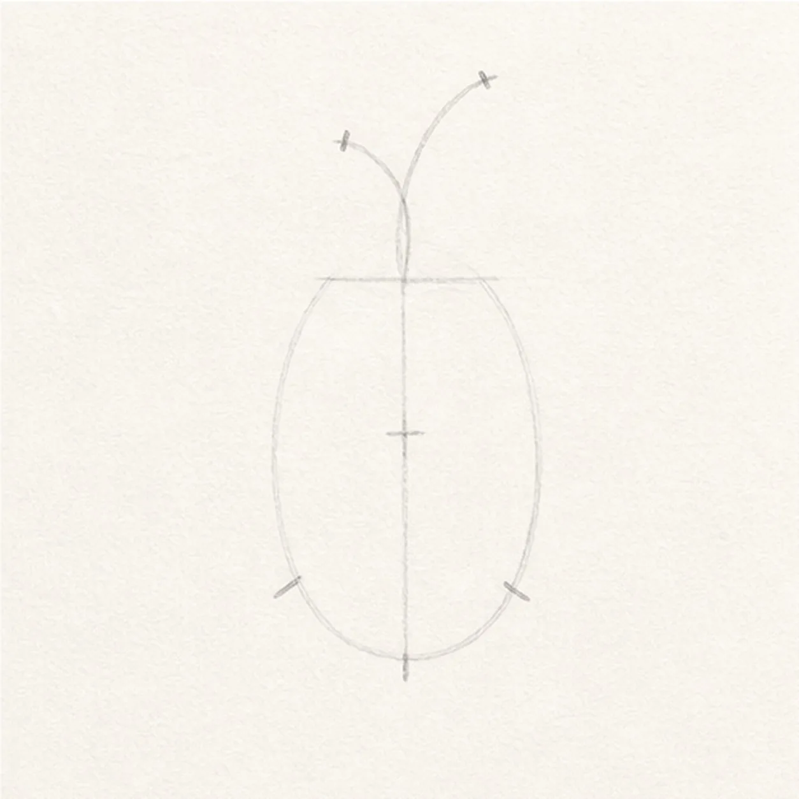
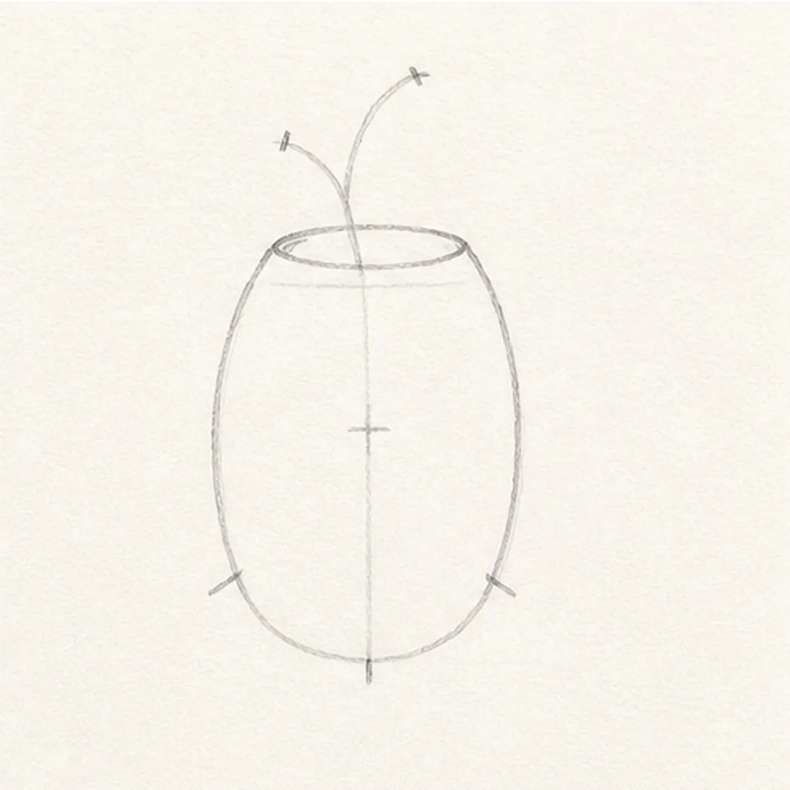
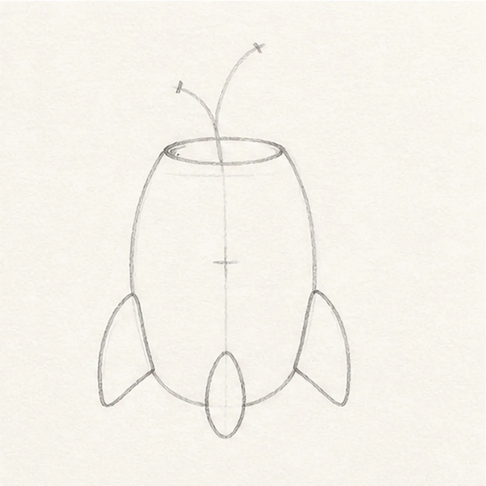
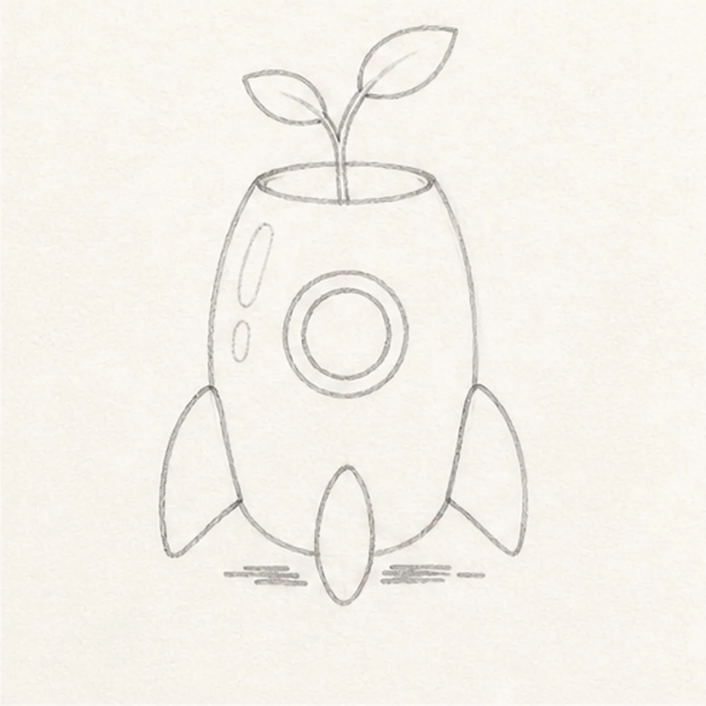
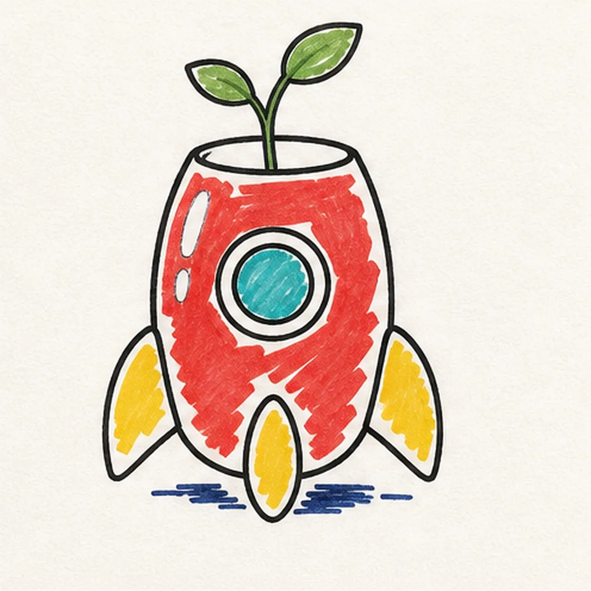

Felt-tip marker mode
Let's draw a cartoon rocket planter with a sprout
Treat this as one playful practice round: sketch the idea loosely, simplify the shapes, then commit with confident marker outlines and bright fills.
-
01

Map the rocket with simple guides
Use pale pencil to place one tall body ellipse, one vertical centerline, one short top-rim axis, a small window-center cross, exactly three fin attachment ticks, and one sprout gesture with two leaf-tip ticks.
Marker tip: Keep this under two minutes. Do not draw closed fins, a window circle, leaf outlines, highlights, or a shadow yet.
-
02

Connect the planter shell
Connect only the rounded rocket body, curved nose, and open top rim over the pale construction while leaving fins, window, and leaves absent.
Marker tip: Pull each body side in one relaxed curve. Keep the three fin ticks, window cross, and sprout gesture visible for the next stages.
-
03

Build three rounded fins
Add exactly three rounded fin contours at the established attachment ticks while keeping the window cross and sprout gesture open.
Marker tip: Compare the empty spaces beside the body so the two side fins balance. Keep the center fin aligned with the body axis.
-
04

Add the window and sprout
Draw one round window with an inner ring, one curved stem with exactly two leaves, two open highlight reserves, and one short broken shadow route.
Marker tip: Ghost the window circle before drawing it. Point the two leaves in different directions and keep the stem emerging from inside the rim.
-
05

Ink and map every color
Ink only the established contours, then place visible red, yellow, teal, green, and navy marker strokes in every major color region without completing the fills.
Marker tip: Ink the small shapes first, rotate the page for the long shell curves, and leave enough unfilled paper for the final pass.
-
06

Finish the launch garden
Complete only the established marker fills, selectively strengthen existing black contours, and add small highlight and shadow accents.
Marker tip: Use directional strokes and preserve the two paper highlights. Count three fins, one window, one stem, and two leaves before stopping.